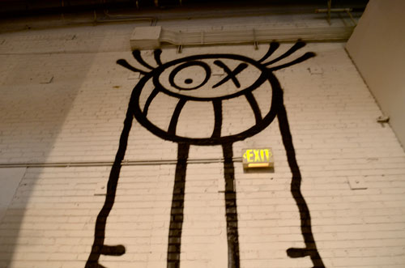

Mr. A

André gained notice in the late 1990's with Mr. A, a cartoonish character with a round head, a cross and a circle for his eyes, a big smile and very long legs, which he used to draw all over the streets of Paris. In 2013, he told The Talks that on average he has drawn 10 Mr. A's a day for almost 30 years and in total he has probably drawn Mr. A around 100,000 to 200,000 times. He is part of the early Parisian graffiti scene along with Invader and Zevs, and he appears in Banksy street art movie, Exit Through the Gift Shop. His distinctive style, poetic and joyful, and his use of pink color, made him quickly stand out.
In the early 2000s, he developed the Love Graffiti series.
While he is said to be very reclusive, he appears in the documentary Exit Through The Gift Shop. His appearance was shot by Mr. Brainwash, the moniker of Paris-born, Los Angeles based filmmaker and street artist Thierry Guetta.
André's artistic career includes solo exhibitions at Air de Paris, The Hole, Circle Culture, and Half Gallery. He also participated in MoCA Los Angeles' Art in the Streets exhibition in 2011. The same year, his work was also on view at the Grand Palais, Paris and the 54th Venice Biennale.